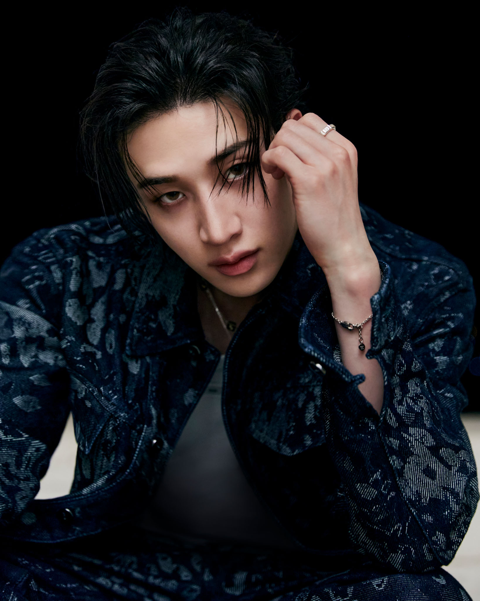
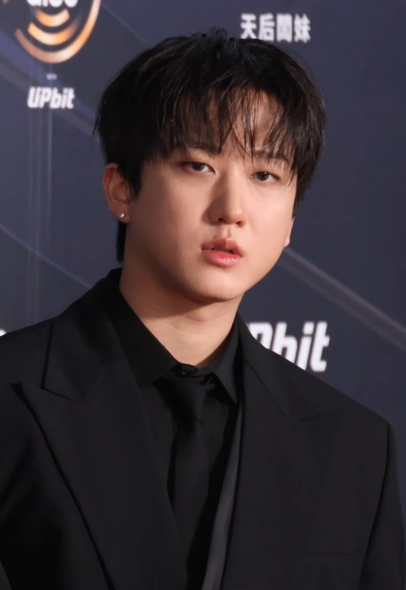
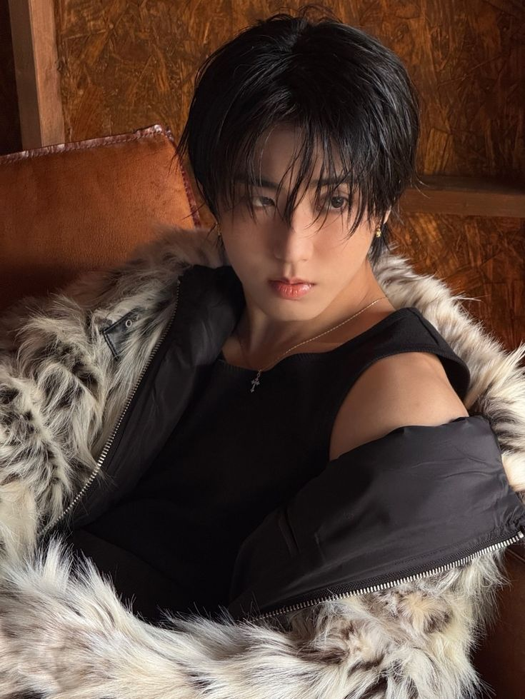

BANG CHAN
Alias: CB97
Líder de 3RACHA y de Stray Kids.
Es el arquitecto principal del sonido del grupo.
Fue trainee de JYP por 7 años antes de debutar.
Estudió producción musical de manera autodidacta.
Conduce el livestream semanal "Chan's Room"
donde interactúa directamente con los STAY.
Créditos KOMCA: +236 canciones registradas
|
|

CHANGBIN
Alias: SPEARB
El rapero de voz más grave del grupo.
Su velocidad para el rap es legendaria entre los fans.
Es conocido por sus letras llenas de energía y agresividad controlada.
Sus versos suelen ser los más técnicamente complejos del grupo.
En 3RACHA se enfoca principalmente en escribir sus propios versos de rap.
Créditos KOMCA: +123 canciones registradas
|
|

HAN
Alias: J.ONE
El genio creativo del trío.
Considerado uno de los raperos más originales de su generación.
Nacido en Malasia, creció en Corea del Sur.
Sus letras son profundamente emocionales e introspectivas.
Junto a Changbin, se enfoca en escribir sus versos,
mientras que Bang Chan trabaja los hooks y melodías del grupo.
Créditos KOMCA: +120 canciones registradas
|
|